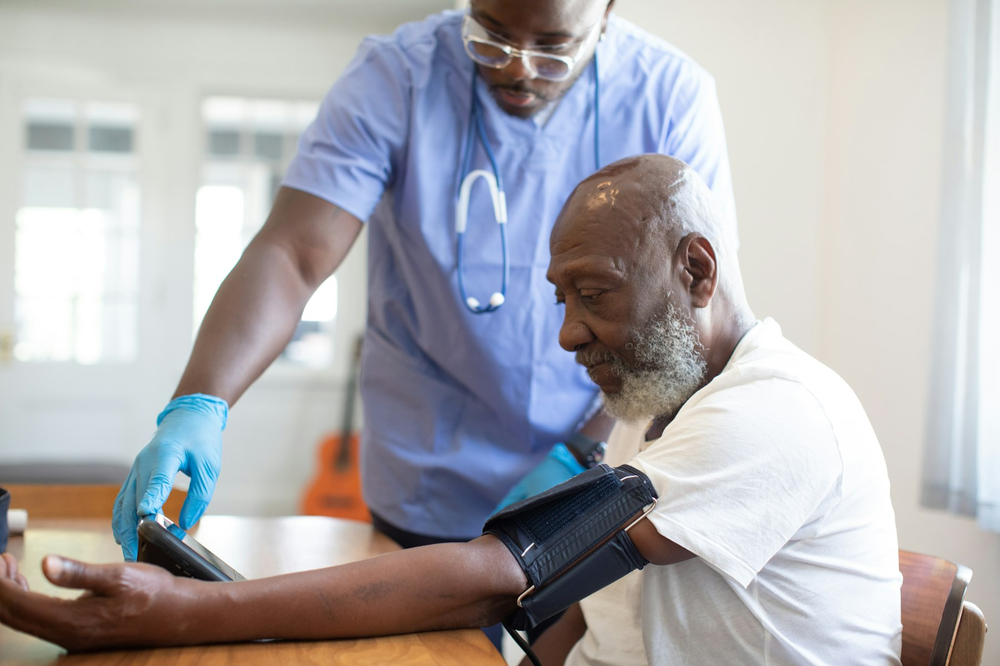

Trial Match is a multi-agent system that connects every patient to trials they qualify for, and gives every trial team a shortlist of people ready to join.
Patients are willing, and trials are open. What’s missing is the connection. Today that depends on a busy doctor remembering which trials exist and checking each one’s rules by hand.
Connect your record once. Your agent checks every open trial, asks for required information when something is missing, and shows only the trials that fit. Apply when you’re ready, or let it apply for you.
Try it as a patient →EGFR exon 19 deletion detectedGenomic lab report
Progression on osimertinib, stopped 3 weeks agoHospital record
Yes, and there was no spreadHer answer to her agent, today
Eligibility is checked before patients even arrive. Applicants come ranked by fit, with the record quoted for every rule, and the strongest matches are invited to pre-screening.
Try it as a clinician →If a patient doesn’t qualify after pre-screening, those results go straight back to their agent, which finds the next trial that fits. When someone finishes a trial, their results start the next search.
MedGemma reads. Code checks. Rules match. People decide.
Ask about a drug and a small team gets to work. Gemini researches it online, with public words only. MedGemma reads what it finds against your record, on your own computer. You see every hand-off as it happens.
Gemini researches. MedGemma reads your record, at home. Only public words cross. You see every hand-off.
Ask the team in the demo →The patient is synthetic. The sources are real: PubMed, FDA labels and ClinicalTrials.gov.